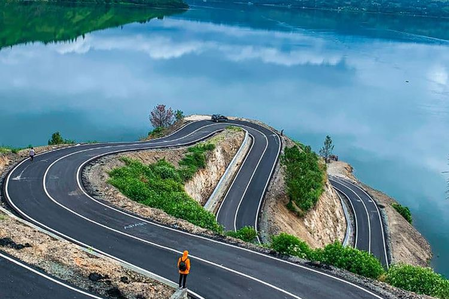
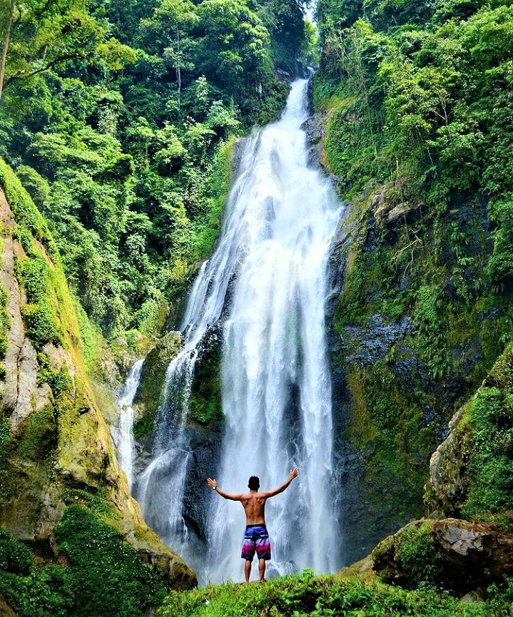
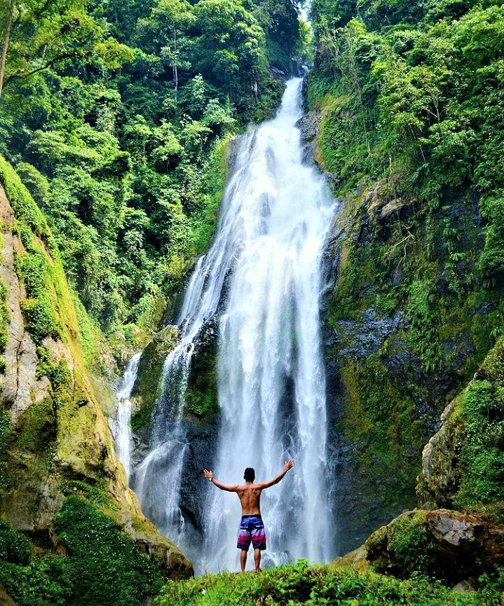
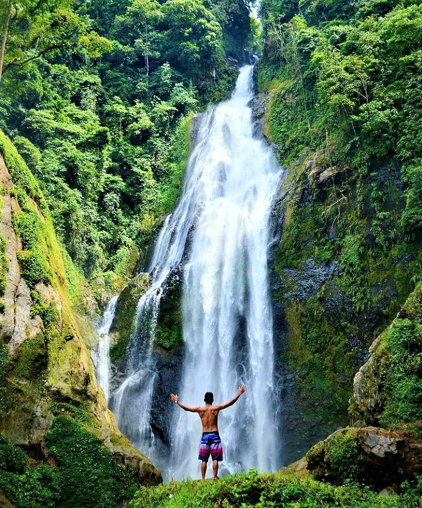

Profil Pembuat
- Nama: Hidayat Abdullah Tanjung
- Email: fahrultanjung16@gmail.com
- Linkedin: Linkedin Pembuat
Deskripsi My Gallery Wishlist
Ini adalah halaman web gallery menampilkan daftar kota idaman saya yang ada di Indonesia. Kota atau daerah ini memiliki keindahan alam, sejarah, dan kenangan unik yang tidak semua kota memilikinya
Kota Favorit Saya

 




Kota Favorit
| Nama Kota | Icon Kota | Jumlah Penduduk | Keunikan |
|---|---|---|---|
| Padangsidempuan | Kota Salak | 225 ribu | Kota Kelahiran |
| Sibolga | Kota Ikan | 90 Ribu | Tempat Hiling |
| Sipirok | Menara Pandang | 33 ribu | Kenangan Bareng Dia |